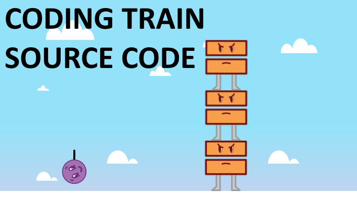
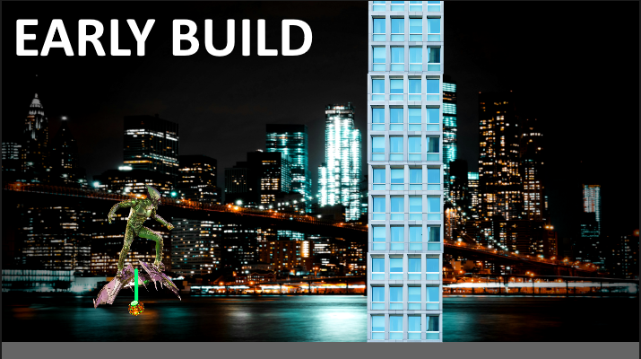
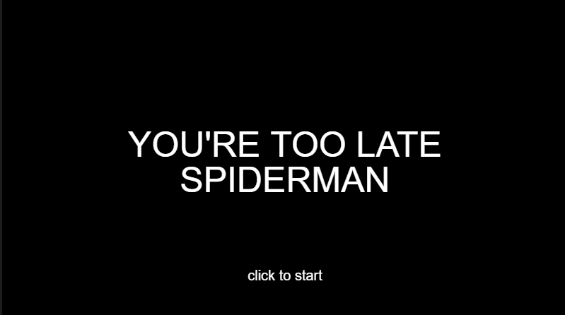

by Jaekob Gamboa, Conrado Mateo, Danny Nguyen
This project was made using The Coding Train's code on an Angry Birds clone, and Matter.js (a physics based engine for p5js.)
We first started off with an idea of an angry birds clone with p5js, and luckily enough, Coding Train already had a skeleton for us.

It came to a lot of thinking in how we were going to make this project our own. Conrad was the one who came up with the idea of using the Green Goblin as our theme. This led us to come up with ideas on how we were doing to incorporate the green goblin, so we wanted the player to be him instead of Spider-Man.

"its giving flash game vibes" - Danny
Once we got the idea down on how we wanted to structure the game, it was time to start coding. We all came together in configuring the adjustments, and deciding what graphics were appropriate.

During development, one thing we could make unique was a title screen for our game. There also came the idea of having an Instructions screen, instead of providing one here on the website.
However, there are a couple of challenges we weren't able to figure out. The main struggle we had was getting an actual score system, and win the game. At this point it is only a green goblin simulator, rather than playing a proper game. But overall, we were able to achieve what we wanted the project to be, while also learning what p5js is capable of doing, even with it's limitations.
“Creativity is allowing yourself to make mistakes. Art is knowing which ones to keep.” – Scott Adams
Jaekob Gamboa - Main Coder, graphic designer, sound designer, instructions Screen
Danny Nguyen - Main coder, title screen
Conrado Mateo - Supporting coder
The Coding Train / Daniel Shiffman
Spider-Man the Movie: the Game Soundtrack